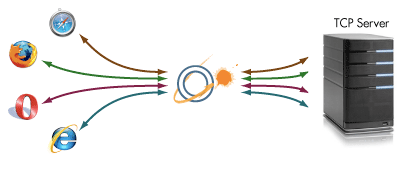

Orbited: Real-time communication for the browser

Orbited provides a pure JavaScript/HTML socket in the browser. It is a web router and firewall that allows you to integrate web applications with arbitrary back-end systems. You can implement any network protocol in the browser - without resorting to plugins.
IntegrationOrbited ships with support for many protocols out of the box, including IRC, XMPP, and STOMP (ActiveMQ, RabbitMQ) |
ScalabilityOrbited's shared-nothing architecture supports arbitrarily large server clusters - perfect horizontal scalability. |
UsabilityOrbited works in all browsers, cross-port and cross-subdomain, with no loading bars, clicks, or spurious history entries. |
StandardsOrbited uses only web standards to provide the most future-proof API and implementation. |